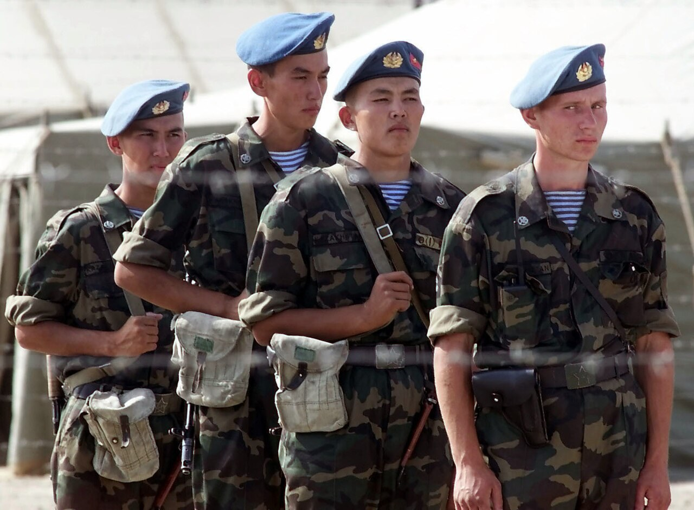

Атыс дайындығы Firearms Training Огневая подготовка
Барлық әрекет — тек атыс жетекшісінің командасы бойынша. Every action only on the range officer's command. Все действия — только по командам руководителя стрельб.

Оқ ату шебі — нысаналарға нақты оқпен атыс жүргізілетін, оқ ату өрісінде белгіленген сызық. Мұндағы әрбір әрекет атыс жетекшісінің командасы бойынша ғана, қатаң кезек және тәртіппен орындалады. Қауіпсіздік шаралары — жай ереже емес, адам өмірін сақтайтын заң: оларды бұзу жарақат пен қазаға тікелей әкеледі. Сондықтан құрылғыны білу, командаларды түсіну және тәртіпті сақтау әрбір атқыш үшін міндетті. The firing line is the marked line on a range from which live fire is delivered at targets. Every action there is carried out only on the range officer's command, in strict sequence and order. The safety rules are not mere formalities but a law that protects human life: breaking them leads directly to injury or death. Knowing the procedure, understanding the commands and keeping discipline is therefore mandatory for every shooter. Огневой рубеж — обозначенная на стрельбище линия, с которой ведётся стрельба боевым патроном по мишеням. Каждое действие здесь выполняется только по команде руководителя стрельб, в строгой очерёдности и порядке. Меры безопасности — не формальность, а закон, оберегающий жизнь: их нарушение ведёт прямо к ранению или гибели. Поэтому знание порядка, понимание команд и соблюдение дисциплины обязательны для каждого стрелка.
| АймақZoneЗона | МағынасыMeaningНазначение |
|---|---|
| Бастапқы шепInitial lineИсходный рубеж | атқыштар команда күтетін жерwhere shooters wait for the commandгде стрелки ожидают команды |
| Оқ ату шебіFiring lineОгневой рубеж | атыс басталатын сызықthe line from which fire beginsлиния, с которой ведётся огонь |
| Нысана өрісіTarget areaМишенное поле | нысаналар орналасқан қауіпті аймақdanger area where targets standопасная зона с мишенями |
| Оқ тиетін валBackstop / buttПулеулавливающий вал | оқты ұстайтын топырақ үйіндісіearth mound that stops bulletsземляной вал, останавливающий пули |
Жалғыз адам — атыс жетекшісі — атысты бастауға, тоқтатуға және қауіпсіздікке толық жауап береді. Тек оның командасы бойынша қару зарядталады, оқ атылады және разрядталады. Жетекшіге бағынбау немесе командасыз әрекет ету — ең ауыр тәртіп бұзушылық. A single person — the range officer — bears full responsibility for starting, stopping and the overall safety of firing. Only on the officer's command is the weapon loaded, fired and unloaded. Disobeying the officer or acting without a command is the gravest breach of discipline. Один человек — руководитель стрельб — несёт полную ответственность за начало, прекращение и безопасность стрельбы. Только по его команде оружие заряжается, ведётся огонь и разряжается. Неподчинение руководителю или действие без команды — тягчайшее нарушение дисциплины.
| КомандаCommandКоманда | Атқыштың әрекетіShooter's actionДействие стрелка |
|---|---|
| «Шепке»"To the line"«На рубеж» | қаруды разрядталған күйде ұстап, өз орныңа шығуmove to your position with the weapon kept unloadedвыдвинуться на своё место с разряженным оружием |
| «Зарядта»"Load"«Заряжай» | магазинді қосып, патронды оқпанға жіберіп, сақтандырғышқа қоюfit the magazine, chamber a round and set the safetyпристегнуть магазин, дослать патрон, поставить на предохранитель |
| «Оқ ат»"Fire"«Огонь» | сақтандырғышты алып, тек өз секторыңдағы нысанаға атыс жүргізуrelease the safety and fire only at the target in your sectorснять с предохранителя и вести огонь только по мишени своего сектора |
| «Тоқта, атуды тоқтат»"Stop, cease fire"«Стой, прекратить огонь» | атысты дереу тоқтату, сақтандырғышқа қою, оқпанды жоғары/нысана жаққа ұстауcease fire at once, apply the safety, keep the muzzle up or downrangeнемедленно прекратить огонь, поставить на предохранитель, держать ствол вверх/в сторону мишеней |
| «Разрядта»"Unload"«Разряжай» | магазинді ажыратып, патронды шығарып, оқпанды тексеруremove the magazine, eject the round, check the chamber is emptyотсоединить магазин, извлечь патрон, проверить пустоту патронника |
| «Қару — тексеруге»"Weapon — for inspection"«Оружие — к осмотру» | бос оқпанды жетекшіге көрсетіп, разрядталғанын дәлелдеуshow the empty chamber to the officer to prove the weapon is clearпредъявить пустой патронник руководителю, подтвердить разряжённость |
| СигналSignalСигнал | МағынасыMeaningЗначение |
|---|---|
| Ақ жалаушаWhite flagБелый флаг | атысқа рұқсат етілген, өріс қауіпсізfiring is permitted, the range is safeстрельба разрешена, рубеж безопасен |
| Қызыл жалаушаRed flagКрасный флаг | атыс жүріп жатыр / қауіп — өріске кіруге қатаң тыйым салынадыfiring in progress / danger — entry to the range is strictly forbiddenидёт стрельба / опасность — вход на рубеж строго запрещён |
Сигнал дауыстық команда мен дабылмен (сирена, ысқырық) толықтырылуы мүмкін. Күмәнді жағдайда — атыс жоқ деп есептеп, жетекшіден растау сұрау керек. Signals may be backed by voice commands and an alarm (siren, whistle). When in doubt, assume firing is in progress and seek confirmation from the officer. Сигнал может дублироваться голосовой командой и звуком (сирена, свисток). При сомнении считать, что стрельба идёт, и запросить подтверждение у руководителя.